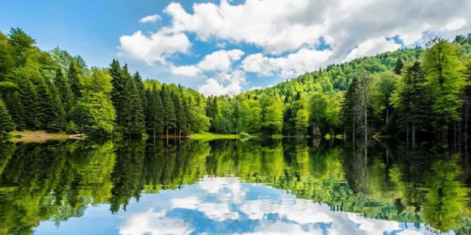
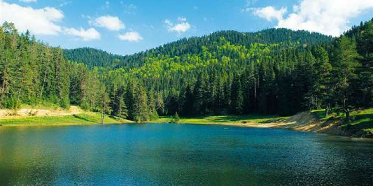
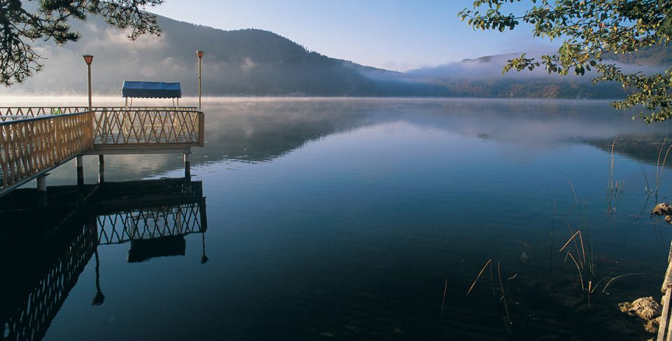
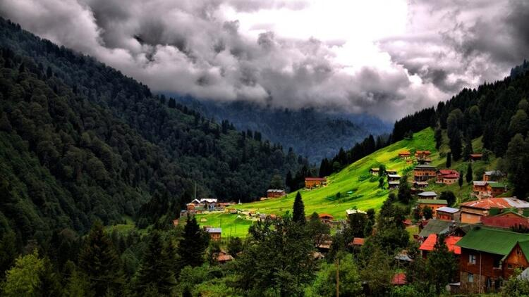
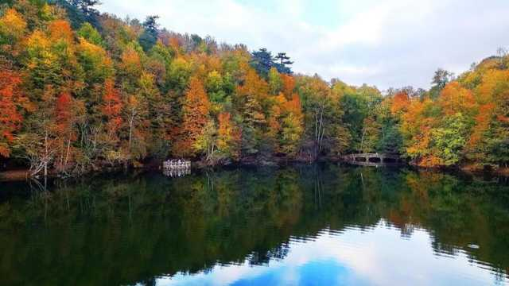
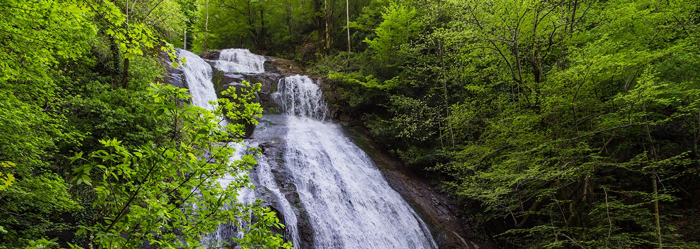
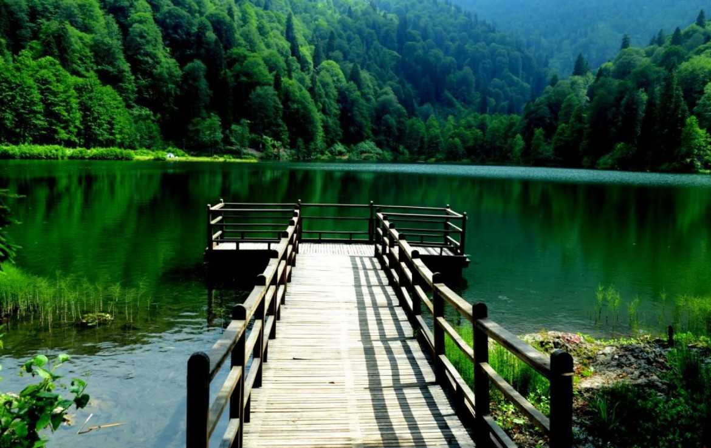
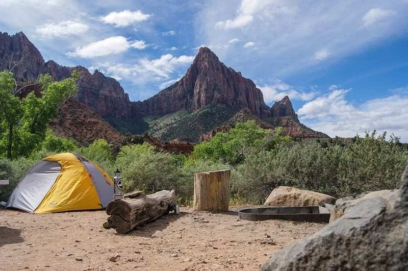

Karadeniz Bölgesi kamp alanları açısından oldukça zengin. Özellikle deneyimli kampçılar için zengin bir coğrafya sunuyor. Doğal bir göl olan Torkul Gölü, şehir merkezine yaklaşık 30 km uzaklıkta. Torkul Gölü çevresinde bir kamp tesisi yok; ancak çadır kampı için en ideal alanlardan biri. Kamp gereçlerinizi, yiyecek ve içeceklerinizi yanınıza almayı unutmayın. Çünkü gölün çevresinde alışveriş yapılabilecek yerler de mevcut değil.
Yenice Ormanlarında kamp yapmak unutulmaz bir deneyim yaşama fırsatı aynı zamanda. Dünya Doğa Koruma Vakfı tarafından acil korunması gereken 100 yer arasında yer alan Yenice Ormanları vahşi hayatın devam ettiği sayılı alanlardan da birisi. Yenice Ormanlarının etrafında kamp tesisi bulunmuyor. Doğayla iç içe kamp yapmak isteyenlerin ilk tercihi olabilir. Ayrıca Yenice Ormanlarının etrafındaki yaylalarda da kamp yapabilirsiniz.
Abant Gölü çevresinde, göl manzarasında karşı kamp yapmayı kim istemez. Her mevsimde tercih edilebilecek Abant Kamp Alanı, hem kısa tatiller hem de uzun süreli kamp tatilleri için doğayla iç içe, huzurlu bir kamp alanı.
Ayder Yaylasında bulunan kamp alanı, Karadeniz Bölgesinde çadır kampı için en uygun alanlardan biri. Yerli halkla tanışmak ve eşsiz Karadeniz müziklerini dinlemek isteyenlerin ilk tercihi olabilir.
Uzungöl Tabiat Parkı, Karadeniz’deki kamp alanlarının çoğunun aksine pek çok tesis ve işletmenin bulunduğu konforlu bir kamp alanı. İhtiyaçlarınızın tamamını kolaylıkla karşılayabileceğiniz Uzungöl Tabiat Parkı’nda, çadır ve karavanda kalmayı da tercih edebilirsiniz.

1965 yılında milli park statüsü kazanan Yedigöller, kampçılar tarafından en fazla tercih edilen kamp alanlarından biri. Her mevsim kamp yapabileceğiniz Yedigöller, uzun yürüyüşler yapmayı düşünenler için de en ideal seçenek. Ancak unutmayın, Yedigöller’de de market benzeri alışveriş tesisleri bulunmuyor, hazırlıklı gitmenizde fayda var.
2011 yılında tabiat parkı statüsüne kavuşan Güzeldere Tabiat Parkı; şelaleleri, ağaçlık alanları, patikaları ve diğer doğal güzellikleri ile kamp yapmak için en iyi seçeneklerden biri. Hem kısa hem de uzun kamp tatillerinde tercih edebileceğiniz Güzeldere Tabiat Parkı’nda, çadır kampı yapabileceğiniz gibi ahşap evlerde de konaklayabilirsiniz.
İnsanı her an şaşırtabilen doğasıyla Artvin, özellikle deneyimli kampçılar için çok sayıda seçenek sunuyor. Karagöl Kamp Alanı da bunlardan birisi. Kış aylarında zorlu olsa da her mevsim kamp yapılabilecek Karagöl, doğayla iç içe huzurlu anlar geçirmenize yardımcı olabilir. Karagöl’de balık tutmanın yasak olduğunu ve hazırlıklı gitmeniz gerektiğini unutmayın.
Deneyimli kampçılar için cennet olan Karadeniz Bölgesinde Kapılı Göller, ancak yürüyerek ulaşabileceğiniz bir kamp alanı. Türkiye’nin en yüksek zirvelerinden biri olan Veçernik Dağı’nın eteklerinde yer alan kamp alanında çadır kurabilir ya da çevredeki tek tesiste konaklayabilirsiniz.

Genellikle Kaçkar Dağları’na tırmanmaya gelen dağcılar tarafından tercih edilen Dilberdüzü de Kapılı Göller gibi yürüyerek ulaşabileceğiniz bir kamp alanı. Yaz aylarında kampçılar tarafından en fazla tercih edilen kamp alanlarından biri olan Dilberdüzü’ne giderken kendinizi tamamen doğanın kollarına bırakacağınızı düşünerek hazırlıklı olmalısınız.
